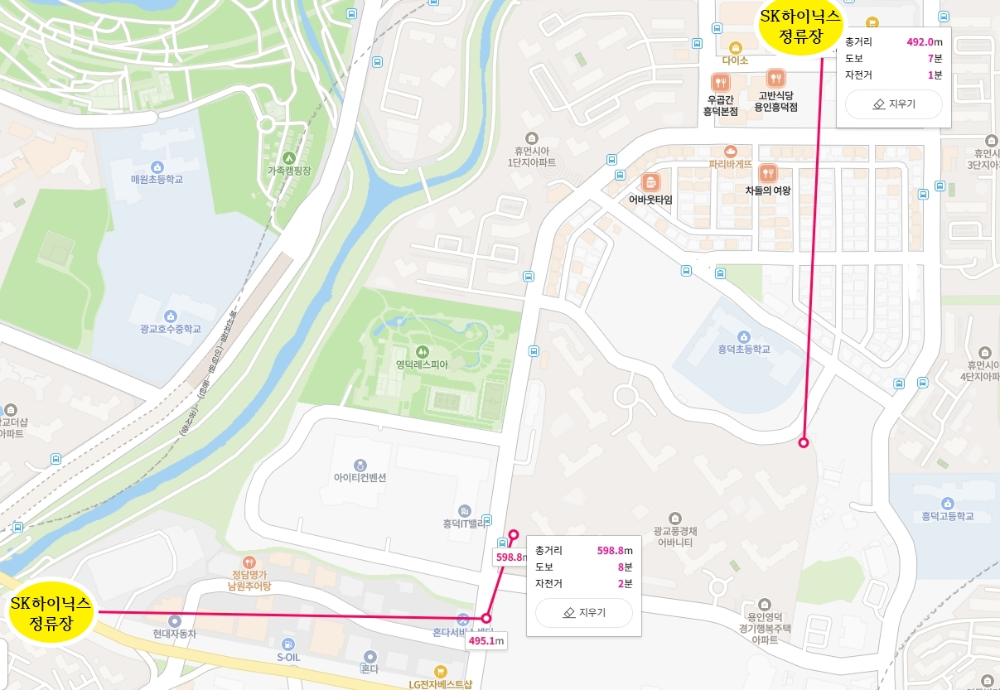
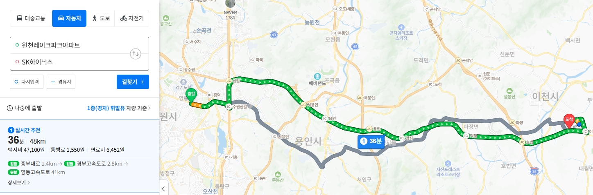

Q3. 광교풍경채는 셔세권? 광역버스 및 출퇴근 정보
1. '셔세권'의 의미와 광교풍경채 반도체 직주근접 입지
'셔세권'이란 주요 기업의 셔틀버스 정류장이나 수도권 주요 업무지구로 향하는 광역버스 정류장이 가까워 직장인들이 출퇴근하기 편리한 입지를 의미합니다. 광교풍경채는 인근에 다수의 대기업 통근 노선과 서울행 광역버스가 정차하는 정류장이 인접해 있어 출퇴근 편의성이 높습니다.
① 원천레이크아파트 정류장 (구 홈플러스)
- 단지로부터의 거리: 약 700m (도보 약 7분 소요)
- 주요 특징: 대기업 통근버스가 다수 정차하는 거점 정류장 중 하나입니다. 인근 산업단지나 주요 오피스 권역으로 이동하는 직장인들이 주로 이용합니다.
② 흥덕이마트 정류장
- 단지로부터의 거리: 약 500m (도보 약 5분 소요)
- 주요 특징: 이마트와 함께 흥덕 상권이 주변에 잘 개발되어 있습니다.

▲ SK하이닉스 기업 통근버스 안내

2. 수원신갈IC 인접성을 통한 40분대 생활권
광교풍경채의 주요 교통 강점 중 하나는 도로망 연계성입니다. 출퇴근시 경부고속도로(수원신갈IC) 및 용인서울고속도로(흥덕IC)로 진입이 쉽습니다.
⏱️ 주요 거점 출퇴근 소요 시간 (광역버스/자차 기준)
- 판교 및 분당 업무지구: 약 20분대 소요
- 삼성전자 기흥/화성: 약 10분 소요
- SK하이닉스 이천: 약 40분 소요
- 서울 강남권 및 서초: 약 40분 소요

▲ 주요 고속도로 IC 연계 및 출퇴근 경로 지도